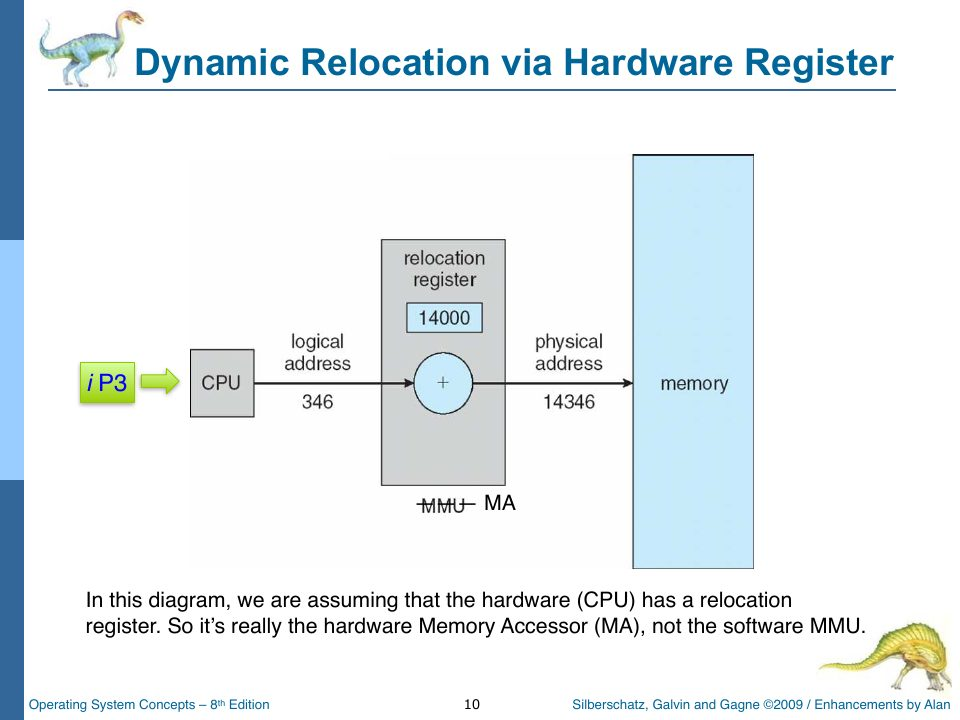
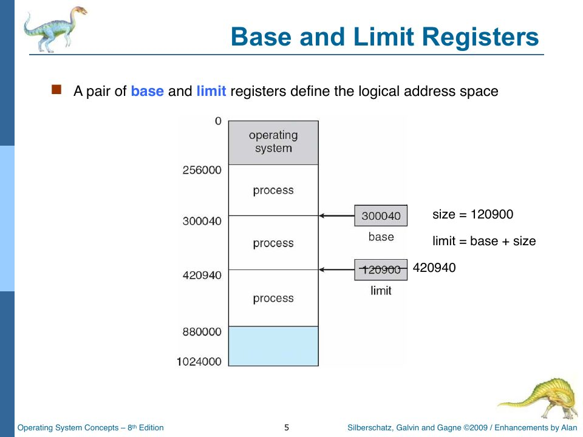

Memory and the Memory Accessor
Slides: Chapter 8 part one, pp. 556–572 (background, base and limit registers, logical vs. physical addresses, the MMU and the memory accessor).
The next layer up is memory, and the piece of hardware that stands between the CPU and memory. This chapter is about the hardware half of memory management. The software half, the memory manager that decides which process gets which partition, waits for Chapter 11.
Physical memory: 768 bytes
namespace TSOS {
export class Memory {
// Memory Design inspired by LongOS on the Hall of Fame
public static SIZE = 0x300;
private bytes: Uint8Array;
public mar: number;
public mdr: number;
constructor(size: number = Memory.SIZE) {
this.bytes = new Uint8Array(size);
this.mar = 0;
}
public size(): number {
return this.bytes.length;
}
public read(address: number): number {
this.validateAddress(address);
this.mar = address;
this.mdr = this.bytes[address];
return this.mdr;
}
public write(address: number, value: number) {
this.validateAddress(address);
const normalized = value & 0xff;
this.mar = address;
this.mdr = normalized;
this.bytes[address] = normalized;
}
public clear(): void {
this.bytes.fill(0x00);
this.mar = 0;
this.mdr = 0;
}
public snapshot(): number[] {
return Array.from(this.bytes);
}
//function was suggested by ChatGPT
private validateAddress(address: number) {
const isInteger = Number.isInteger(address);
if (!isInteger || address < 0 || address >= this.bytes.length) {
throw new Error(`Memory access out of bounds at address ${address}`);
}
}
}
}
That’s the whole of RAM. A few details:
Size. 0x300 is hexadecimal for 768: three blocks of 0x100 (256) bytes. The Chapter 8 slides say it directly: “768 bytes will do for us, eventually. 256 for iP2.” Project Part Two needs one 256-byte program; Part Three needs three at once. Lab 011 is the moment you make the jump: “Increase your memory from 256 bytes to 768 bytes. … Be sure that you can map a memory partition number (0,1,2) to the appropriate base address (0, 256, 512).”
Uint8Array. A typed array of unsigned 8-bit integers. Every element is a byte, 0 to 255, and the array is created full of zeros. If you store 256 into a Uint8Array, it silently wraps to 0; store -1 and you get 255. write masks with value & 0xff anyway, which makes the intent explicit and also keeps mdr (which is an ordinary number) honest. Chapter 5a explains & 0xff.
MAR and MDR. The memory address register holds the address being accessed, and the memory data register holds the byte being read or written. Real memory hardware works through exactly these two registers: the CPU puts an address in the MAR, and the byte appears in (or is taken from) the MDR. rObSen’s read and write update them on every access even though nothing else reads them. They’re there to model the hardware faithfully, and you could display them in the CPU panel to watch memory traffic.
Bounds checking. validateAddress throws a JavaScript Error if the address isn’t an integer in range. A comment credits ChatGPT with the function, and another credits LongOS (a 2024 Hall of Fame project) with the overall design. Throwing is the hardware equivalent of a bus error: an access to an address where no memory exists.
Why a memory accessor?
If the CPU read _Memory directly, every program would have to know where in physical memory it had been loaded. A program loaded at 0x0100 would need every address in its code adjusted by 256. That’s compile-time binding (slide p. 559), and it’s what MS-DOS .com files did: the program only works at one location.
Instead, programs are written as if they start at address 0x0000, and something between the CPU and memory adds the right offset on every access. The slides call that something the MMU (memory-management unit), with a relocation register holding the offset:

The annotation matters. In the course’s vocabulary, the memory accessor (MA) is the hardware that translates addresses on every access, and the memory manager (MMU) is the OS software that decides where each process lives. The textbook blurs the two; the course separates them because rObSen does. Slide p. 572 explains why the translation has to be done in rObSen’s memory accessor rather than a register: “our hardware/host simulation does not support a Relocation Register (because the 6502 did not have one).”
The accessor, line by line
module TSOS {
export class MemoryAccessor {
constructor(private readonly memory: Memory) {}
public read(address: number): number {
const translated = this.translateAddress(address, "read");
return this.memory.read(translated);
}
public write(address: number, value: number): void {
const translated = this.translateAddress(address, "write");
this.memory.write(translated, value);
}
public loadBytes(startAddress: number, bytes: number[]): void {
this.validateRange(startAddress, bytes.length);
for (let offset = 0; offset < bytes.length; offset++) {
this.write(startAddress + offset, bytes[offset]);
}
}
public clear(): void {
this.memory.clear();
}
private validateRange(startAddress: number, length: number): void {
if (length === 0) {
return;
}
const endAddress = startAddress + length - 1;
if (startAddress < 0 || endAddress >= this.memory.size()) {
throw new Error(
`Memory range ${startAddress.toString(16)}-${endAddress.toString(16)} exceeds physical memory`,
);
}
this.translateAddress(startAddress, "load");
this.translateAddress(endAddress, "load");
}
private translateAddress(address: number, operation: string): number {
const isExecuting = _CPU && _CPU.isExecuting;
if (!isExecuting || !_CurrentProcess) {
return address;
}
const logical = address & 0xff;
const physical = _CurrentProcess.base + logical;
if (!_CurrentProcess.contains(physical)) {
const message = `Memory ${operation} at 0x${physical
.toString(16)
.padStart(4, "0")} violates base/limit for PID ${_CurrentProcess.pid}`;
this.handleMemoryViolation(message);
}
return physical;
}
private handleMemoryViolation(message: string): void {
if (_CurrentProcess) {
_CurrentProcess.markTerminated();
}
if (_CPU) {
_CPU.pause();
}
if (_Kernel && typeof _Kernel.krnTrap === "function") {
_Kernel.krnTrap(message);
} else {
throw new Error(message);
}
}
}
}
translateAddress
This is the heart of it.
const isExecuting = _CPU && _CPU.isExecuting;
if (!isExecuting || !_CurrentProcess) {
return address;
}
Translation only happens while a user process is running. When the OS itself touches memory (loading a program, zeroing a partition), the CPU usually isn’t executing, so addresses pass through untouched: the OS uses physical addresses, user programs use logical ones. (The word “usually” is doing work there. Chapter 17 finds the place where the OS writes memory while the CPU is executing, and the bug that causes.) That’s the same split a real machine makes between kernel and user mode, but here the “mode” is inferred from _CPU.isExecuting rather than read from the mode bit.
const logical = address & 0xff;
const physical = _CurrentProcess.base + logical;
Take the low byte of the address (a number from 0 to 255) and add the process’s base. For a process in partition 1, logical 0x0042 becomes physical 0x0100 + 0x42 = 0x0142.
if (!_CurrentProcess.contains(physical)) { … handleMemoryViolation … }
Then check the physical address against the process’s base and limit (PCB.contains returns base <= address <= limit). A violation terminates the process, pauses the CPU, and traps into the kernel.

The protection check can never fire
Look at the arithmetic again. logical is address & 0xff, so it’s always between 0 and 255. Every partition is exactly 256 bytes, so limit = base + 255. Therefore physical = base + logical is always between base and base + 255, which is always inside [base, limit]. The violation branch is unreachable.
That doesn’t mean programs can escape their partitions. It means they can’t escape, but not for the reason the code suggests. Masking with & 0xff folds every address into the process’s own 256 bytes. A program that tries to store to 0x01FF, which in physical terms is the last byte of partition 1, actually stores to logical 0xFF of its own partition. You can verify it: load A9 07 8D FF 01 00 (load 7 into the accumulator, store it at $01FF, break) and run it in partition 0. It completes normally, with no trap, and byte 0x00FF of partition 0 becomes 7.
address > 0xff (or more generally address >= limit - base + 1), it's outside the process's logical address space. Appendix C has the patch.
handleMemoryViolation calls krnTrap, which paints the Blue Screen of Death and shuts down the whole OS. A protection fault in one user process should kill that process and let the others carry on. Shutting down the kernel because a user program misbehaved is the opposite of what protection is for. The same is true of invalid opcodes (Chapter 5).
loadBytes and validateRange
loadBytes writes a program into memory byte by byte through write, after validateRange checks that the whole range fits in physical memory. The OS calls it while the CPU is stopped, so startAddress is physical. (The extra translateAddress(…, "load") calls in validateRange do nothing in that case; they’re belt-and-braces.)
A bug the tests caught
One commit message from November 9 reads: “fixed the segmentation bug uncovered by GLaDOS: PCBs now store logical (0–255) PCs.” Before that fix, a PCB saved a physical program counter. When the dispatcher restored it into the CPU and the accessor translated it again, base got added twice, and a process in partition 1 or 2 jumped into the wrong memory. Now Cpu.cycle saves this.PC & 0xff into the PCB, so PCs are always logical. The rule this enforces is worth remembering: everything the process can see is logical; only the accessor knows physical.
Summary
Memoryis a 768-byteUint8Arraywith MAR/MDR and a bounds check.MemoryAccessortranslates logical addresses (0–255) to physical ones by adding the running process’s base. It’s rObSen’s stand-in for a relocation register.- The OS bypasses translation by working while the CPU isn’t executing.
- Protection works by masking, so out-of-range addresses wrap silently, and the explicit violation check is dead code.
Check yourself
- A process in partition 2 executes
AD 10 00(load the accumulator from$0010). Which physical address is read? - Why does
translateAddresscheck_CPU.isExecutingrather than_Mode? - Write the one-line condition that would make the violation check meaningful.
Answers
- Base of partition 2 is
0x0200, so physical0x0210. - Because
_Modedoesn’t reliably reflect whether a user program is running: the kernel sets it to “user” at the end of many kernel functions even when no process is running.isExecutingis the CPU’s own state, so it’s the better signal. (A cleaner design would make the CPU set the mode bit when it starts and stops executing user code, and have the accessor read that.) - Before masking:
if (address < 0 || address > _CurrentProcess.limit - _CurrentProcess.base) handleMemoryViolation(…).